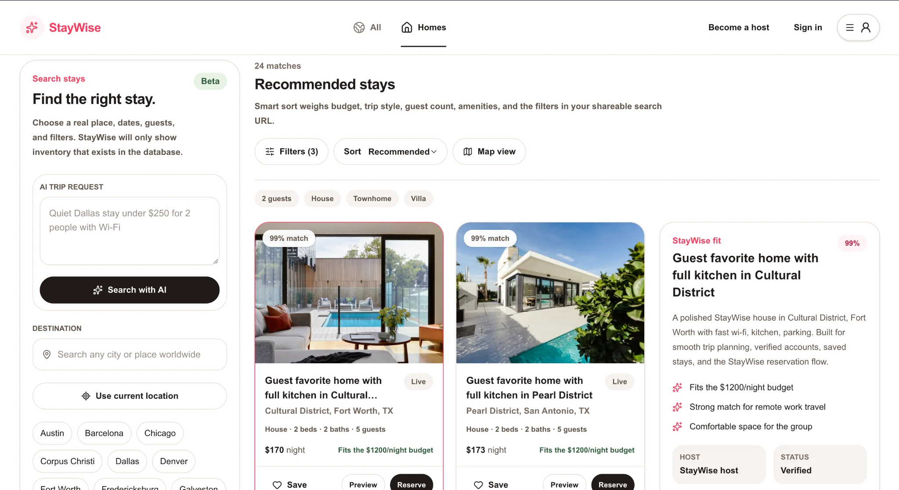
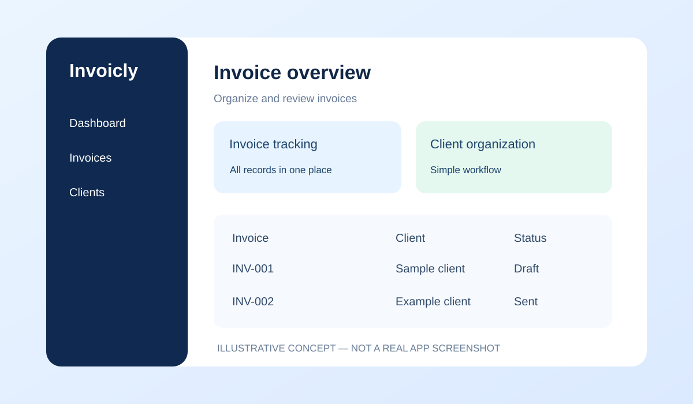

03 / FEATURED PROJECTSProjects that show how I think and build.
Explore the problem, technical approach, design decisions and next steps behind my work. Explore a live application, a React-based invoice manager, and an academic machine learning project. Concept diagrams are labeled where actual screenshots are not yet available.

01 · LIVE WEB APPLICATIONStay Wise — Housing Finder
A deployed stay-discovery app featuring location and date search, stay categories, AI search, and matching suggestions.
User preferencesMatching workflowLive deployment
Read case study → Visit live site ↗

02 · MACHINE LEARNING · ACADEMIC PROJECTNetwork Traffic Anomaly Detection
An unsupervised approach using a graph convolutional autoencoder to identify traffic patterns that differ from learned normal behavior.
PythonPyTorch GeometricGCNAnomaly detection
Visual: conceptual architecture diagram; not measured model output.
Read full case study →

03 · REACT WEB APPInvoicly — Invoice Management
A clean, lightweight invoice management app designed for freelancers and small businesses, built with React and Vite.
ReactViteJavaScriptESLint
Visual: illustrative interface, not a screenshot of the app. Source repository verified.
Read full case study → GitHub ↗
Want to see the code?
Explore the projects and see how they work.
Additional academic work
Machine Learning Model Development & Evaluation
Applied supervised and unsupervised techniques to classification, regression, and data analysis. Worked through preprocessing, feature analysis, training, prediction, and metric-based evaluation.
PythonMachine LearningModel Evaluation
Academic project overview from my earlier resume; specific datasets and results can be added when verified.